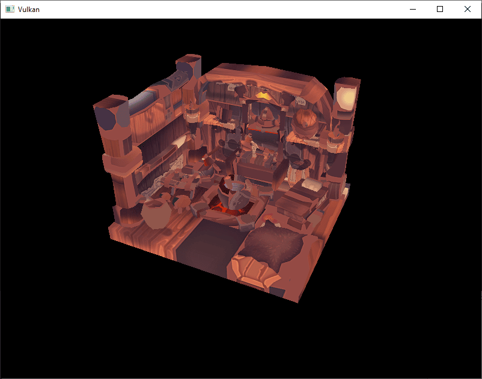
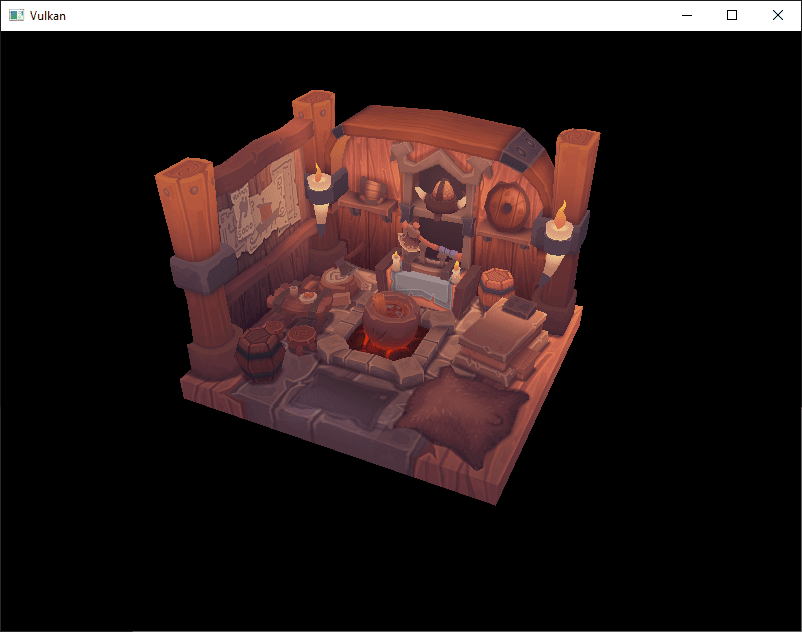

Loading Models
Introduction
Your program is now ready to render textured 3D meshes, but the current geometry in the vertices and indices arrays is not very interesting yet.
In this chapter, we’re going to extend the program to load the vertices and indices from an actual model file to make the graphics card actually do some work.
Many graphics API tutorials have the reader write their own OBJ loader in a chapter like this. The problem with this is that any remotely interesting 3D application will soon require features that are not supported by this file format, like skeletal animation. We will load mesh data from an OBJ model in this chapter, but we’ll focus more on integrating the mesh data with the program itself rather than the details of loading it from a file.
Library
We will use the tinyobjloader library to load vertices and faces from an OBJ file. It’s fast and it’s easy to integrate because it’s a single file library like stb_image. This was mentioned in the Development Environment chapter and should be part of the dependencies for this portion of the tutorial.
Sample mesh
In this chapter, we won’t be enabling lighting yet, so it helps to use a sample model that has lighting baked into the texture. An easy way to find such models is to look for 3D scans on Sketchfab. Many of the models on that site are available in OBJ format with a permissive license.
For this tutorial, I’ve decided to go with the Viking room model by nigelgoh (CC BY 4.0). I tweaked the size and orientation of the model to use it as a drop-in replacement for the current geometry:
{kind=link}
Feel free to use your own model, but make sure that it only consists of one material and that is has dimensions of about 1.5 x 1.5 x 1.5 units.
If it is larger than that, then you’ll have to change the view matrix.
Put the model file in a new models directory next to shaders and textures, and put the texture image in the textures directory.
Put two new configuration variables in your program to define the model and texture paths:
constexpr uint32_t WIDTH = 800;
constexpr uint32_t HEIGHT = 600;
const std::string MODEL_PATH = "models/viking_room.obj";
const std::string TEXTURE_PATH = "textures/viking_room.png";And update createTextureImage to use this path variable:
stbi_uc* pixels = stbi_load(TEXTURE_PATH.c_str(), &texWidth, &texHeight, &texChannels, STBI_rgb_alpha);Loading vertices and indices
We’re going to load the vertices and indices from the model file now, so you should remove the global vertices and indices arrays now.
Replace them with non-const containers as class members:
std::vector<Vertex> vertices;
std::vector<uint32_t> indices;
vk::raii::Buffer vertexBuffer = nullptr;
vk::raii::DeviceMemory vertexBufferMemory = nullptr;
vk::raii::Buffer indexBuffer = nullptr;
vk::raii::DeviceMemory indexBufferMemory = nullptr;You should change the type of the indices from uint16_t to uint32_t, because there are going to be a lot more vertices than 65535.
The somewhat complex construction vk::IndexTypeValue<decltype(indices)::value_type>::value automatically gets you the indices' type.
commandBuffer.bindIndexBuffer(*indexBuffer, 0, vk::IndexTypeValue<decltype(indices)::value_type>::value);The tinyobjloader library is included in the same way as STB libraries.
Include the tiny_obj_loader.h file and make sure to define TINYOBJLOADER_IMPLEMENTATION in one source file to include the function bodies and avoid linker errors:
#define TINYOBJLOADER_IMPLEMENTATION
#include <tiny_obj_loader.h>We’re now going to write a loadModel function that uses this library to populate the vertices and indices containers with the vertex data from the mesh.
It should be called somewhere before the vertex and index buffers are created:
void initVulkan()
{
...
loadModel();
createVertexBuffer();
createIndexBuffer();
...
}
...
void loadModel()
{
}A model is loaded into the library’s data structures by calling the tinyobj::LoadObj function:
void loadModel()
{
tinyobj::attrib_t attrib;
std::vector<tinyobj::shape_t> shapes;
std::vector<tinyobj::material_t> materials;
std::string warn, err;
if (!tinyobj::LoadObj(&attrib, &shapes, &materials, &warn, &err, MODEL_PATH.c_str()))
{
throw std::runtime_error(warn + err);
}
}An OBJ file consists of positions, normals, texture coordinates and faces. Faces consist of an arbitrary amount of vertices, where each vertex refers to a position, normal and/or texture coordinate by index. This makes it possible to not just reuse entire vertices, but also individual attributes.
The attrib container holds all of the positions, normals and texture coordinates in its attrib.vertices, attrib.normals and attrib.texcoords vectors.
The shapes container contains all of the separate objects and their faces.
Each face consists of an array of vertices, and each vertex contains the indices of the position, normal and texture coordinate attributes.
OBJ models can also define a material and texture per face, but we will be ignoring those.
The err string contains errors and the warn string contains warnings that occurred while loading the file, like a missing material definition.
Loading only really failed if the LoadObj function returns false.
As mentioned above, faces in OBJ files can actually contain an arbitrary number of vertices, whereas our application can only render triangles.
Luckily the LoadObj has an optional parameter to automatically triangulate such faces, which is enabled by default.
We’re going to combine all of the faces in the file into a single model, so just iterate over all of the shapes:
for (const auto& shape : shapes)
{
}The triangulation feature has already made sure that there are three vertices per face, so we can now directly iterate over the vertices and dump them straight into our vertices vector:
for (const auto& shape : shapes)
{
for (const auto& index : shape.mesh.indices)
{
Vertex vertex{};
vertices.push_back(vertex);
indices.push_back(indices.size());
}
}For simplicity, we will assume that every vertex is unique for now, hence the simple auto-increment indices.
The index variable is of type tinyobj::index_t, which contains the vertex_index, normal_index and texcoord_index members.
We need to use these indices to look up the actual vertex attributes in the attrib arrays:
vertex.pos = {
attrib.vertices[3 * index.vertex_index + 0],
attrib.vertices[3 * index.vertex_index + 1],
attrib.vertices[3 * index.vertex_index + 2]
};
vertex.texCoord = {
attrib.texcoords[2 * index.texcoord_index + 0],
attrib.texcoords[2 * index.texcoord_index + 1]
};
vertex.color = {1.0f, 1.0f, 1.0f};Unfortunately the attrib.vertices array is an array of float values instead of something like glm::vec3, so you need to multiply the index by 3.
Similarly, there are two texture coordinate components per entry.
The offsets of 0, 1 and 2 are used to access the X, Y and Z components, or the U and V components in the case of texture coordinates.
Run your program now and you should see something like the following:

Great, the geometry looks correct, but what’s going on with the texture?
The OBJ format assumes a coordinate system where a vertical coordinate of 0 means the bottom of the image, however we’ve uploaded our image into Vulkan in a top to bottom orientation where 0 means the top of the image.
Solve this by flipping the vertical component of the texture coordinates:
vertex.texCoord = {
attrib.texcoords[2 * index.texcoord_index + 0],
1.0f - attrib.texcoords[2 * index.texcoord_index + 1]
};When you run your program again, you should now see the correct result:

All that hard work is finally beginning to pay off with a demo like this!
As the model rotates you may notice that the rear (backside of the walls) looks a bit funny. This is normal and is simply because the model is not really designed to be viewed from that side.
Vertex deduplication
Unfortunately, we’re not really taking advantage of the index buffer yet.
The vertices vector contains a lot of duplicated vertex data, because many vertices are included in multiple triangles.
We should keep only the unique vertices and use the index buffer to reuse them whenever they come up.
A straightforward way to implement this is to use a map or unordered_map to keep track of the unique vertices and respective indices:
#include <unordered_map>
...
std::unordered_map<Vertex, uint32_t> uniqueVertices{};
for (const auto& shape : shapes)
{
for (const auto& index : shape.mesh.indices)
{
Vertex vertex{};
...
auto [it, inserted] = uniqueVertices.insert({vertex, static_cast<uint32_t>(vertices.size())});
if (inserted)
{
vertices.push_back(vertex);
}
indices.push_back(it->second);
}
}Every time we read a vertex from the OBJ file, we insert the { vertex, index } pair, where the index is the current size of the vertices array.
Only if the vertex is actually inserted, the index value is set as well. Otherwise the index for the vertex is in the map is not changed.
And if the vertex is inserted, we store it in the vertices.
In any case, the index of that vertex in the vertices vector is added to the indices vector.
The program will fail to compile right now, because using a user-defined type like our Vertex struct as key in a hash table requires us to implement two functions: equality test and hash calculation.
The former is easy to implement by overriding the == operator in the Vertex struct:
bool operator==(const Vertex& other) const
{
return pos == other.pos && color == other.color && texCoord == other.texCoord;
}A hash function for Vertex is implemented by specifying a template specialization for std::hash<T>.
Hash functions are a complex topic, but cppreference.com recommends the following approach combining the fields of a struct to create a decent quality hash function:
namespace std
{
template<> struct hash<Vertex>
{
size_t operator()(Vertex const& vertex) const
{
return ((hash<glm::vec3>()(vertex.pos) ^ (hash<glm::vec3>()(vertex.color) << 1)) >> 1) ^ (hash<glm::vec2>()(vertex.texCoord) << 1);
}
};
}This code should be placed outside the Vertex struct.
The hash functions for the GLM types need to be included using the following header:
#define GLM_ENABLE_EXPERIMENTAL
#include <glm/gtx/hash.hpp>The hash functions are defined in the gtx folder, which means that it is technically still an experimental extension to GLM.
Therefore, you need to define GLM_ENABLE_EXPERIMENTAL to use it.
It means that the API could change with a new version of GLM in the future, but in practice the API is very stable.
You should now be able to successfully compile and run your program.
If you check the size of vertices, then you’ll see that it has shrunk down from 11,484 to 3,566!
That means that each vertex is reused in an average number of ~3 triangles.
This definitely saves us a lot of GPU memory.
In the next chapter, we’ll learn about a technique to improve texture rendering.